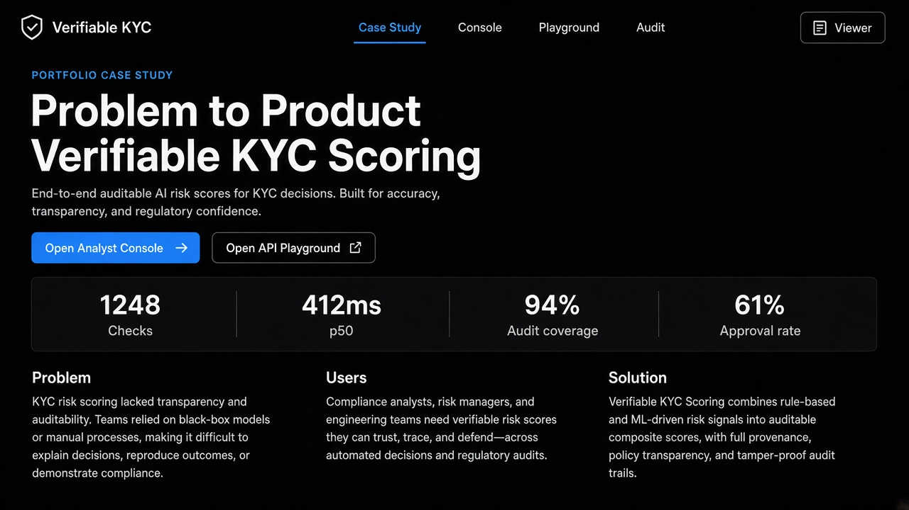
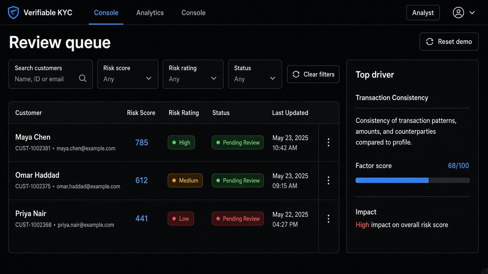
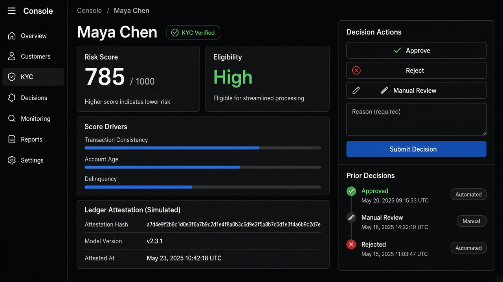
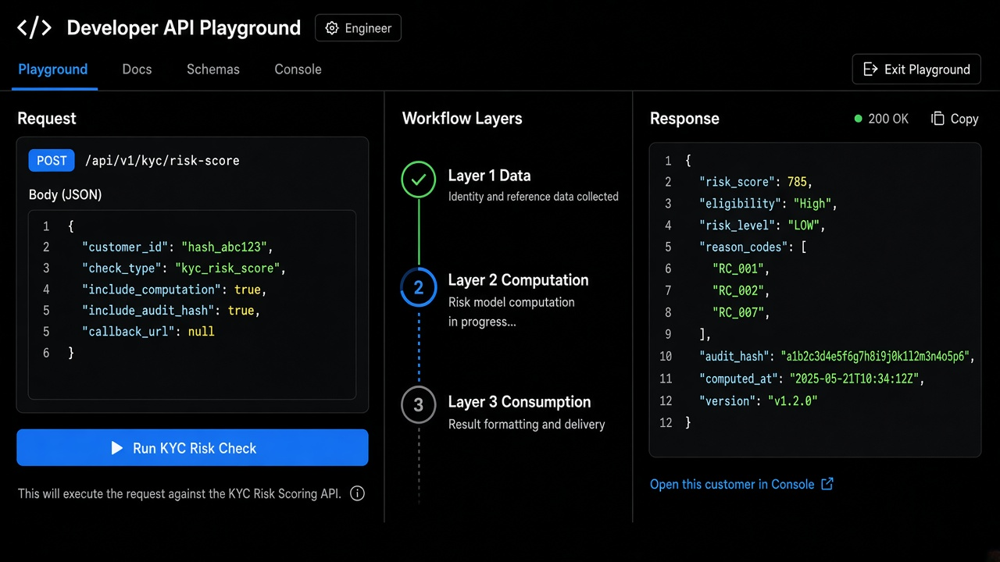

Approval gate before implementation · dark theme mockups
Hiring-manager portfolio narrative: problem → solution → metrics → CTAs into the live product.

Risk analyst review queue with filters, eligibility, and top-driver insight.

Score drivers, simulated attestation, and Approve / Reject / Manual review workflow.

Developer request editor, three-layer pipeline stepper, signed JSON response.
